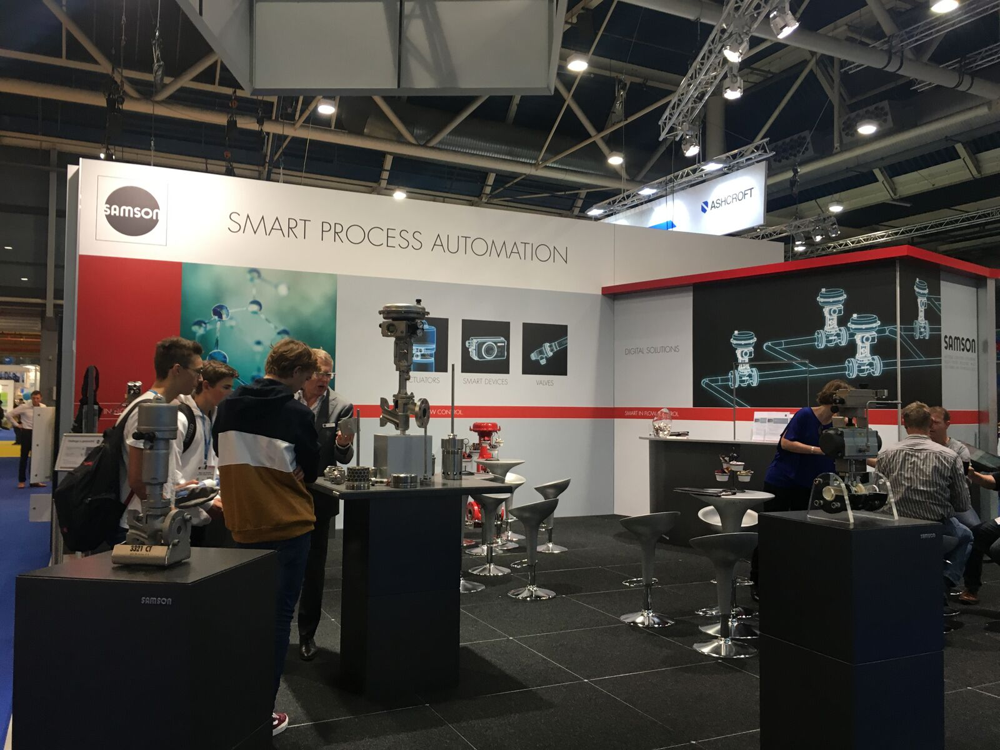
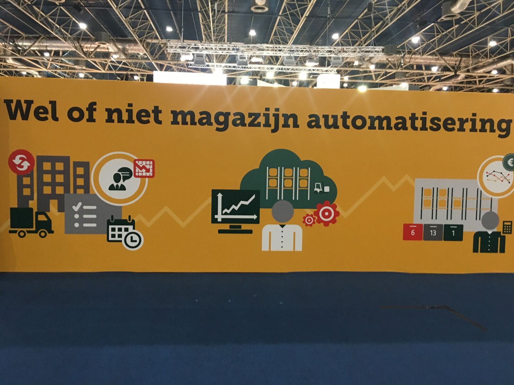

Smart Connection - Excursies Lina
Als onderdeel van het vak Smart Connection heb ik een aantal beurzen, bedrijfsbezoeken en klassenuitjes bijgewoond. Onderstaand beschrijf ik mijn ervaringen, bevindingen en andere belangrijke zaken van elke excursie apart in een sub-hoofdstuk.
World of Technology & Science
WoTS (World of Technology & Science) is een jaarlijkse beurs waarin bedrijven demonstraties en seminars presenteren van hun Smart toepassingen. Het WoTS is onderverdeeld in vijf verschillende branches: World of Automation, World of Laboratory, World of Motion & Drives, World of Electronics en Industrial Processing.

Doordat de WoTS zo uitgebreid is heb ik veel verschillende soorten technologieën kunnen zien. Van robotica tot koelsystemen en Industry 4.0 tot VR-systemen. Oftewel alles rondom Smart Industry.
Mijn doel bij mijn bezoek aan de WoTS was vooral om mij verder te oriënteren in de mogelijkheden van Smart Industry. Ik was vooral benieuwd hoe bedrijven de allernieuwste innovaties inzetten in hun organisatie.

Het WoTS was zo groot dat ik heb besloten om maar een aantal stands uit te zoeken en daar langs te gaan om mijn tijd optimaal te benutten.
Omdat ik een ICT-student ben in de richting Network Infrastructure, Security en Management heb ik dan ook besloten om in ieder geval een paar stands in deze branches te bezoeken. Daarnaast wilde ik graag wat zien van robotica en Industry 4.0, maar wilde ook de nieuwe technologieën zien met betrekking tot milieu en duurzaamheid.
De eerste stand waar ik langskwam was een bedrijf die zich specialiseerde in Security, en dan vooral Secure Remote Access regelingen. Ik ben hier in gesprek gegaan met een meneer en heb een handig boekje “Secure Remote Access for Industrial Machines for dummies” opgepikt.

Ook ben ik langs de stand gegaan van Reflex. Dit is een bedrijf dat zich specialiseert in verwarmings- en koelsystemen. Uit het gesprek tussen mij en de meneer van de stand kwam naar voren dat zij vooral bezig zijn met het milieu. Zij willen CO2-emissies verlagen door verwarmingsinstallaties aan te bieden die minder CO2 uitstoten. Deze verwarmingselementen zijn efficiënter, bieden meer comfort en brengen om deze twee redenen ook nog eens minder kosten met zich mee. Efficiëntie wil zeggen dat er geen energie verloren gaat, en alle toegevoerde energie ook daadwerkelijk omgezet wordt in warmte of kou. Water is hierbij het belangrijkste systeemcomponent en lucht/gassen zijn de vijand. Vacuüm-sproeibuis ontgassing met gepatenteerde overstromingsregeling lost echter het gasprobleem op.

Elektro/Installatie vakbeurs
Bij de Elektro/Installatie vakbeurs in Hardenberg stond vooral Industry 4.0 en industriële machinerie centraal. Deze beurs vond ik persoonlijk het minst interessant omdat ik niet veel Smart toepassingen kon vinden. Hierdoor heb ik weinig inspiratie op kunnen doen tijdens deze beurs.
ICT & Logistiek
Omdat ik een vrij bedrijfskundige project heb, heb ik besloten om tijdens mijn project de beurs ICT & Logistiek te bezoeken om mogelijk inspiratie op te doen. Mijn oog viel gelijk toen ik binnenkwam op het bedrijf Rittal, dat naast het bieden van flexibele netwerkinfrastructuren en cloudoplossingen, ook server-racks (serverkasten) ontwerpt met Smart blusinstallaties. Wanneer in een serverruimte brand ontstaan, zijn er meestal blusinstallaties die de hele of een gedeelte van de ruimte blussen. Met de Smart blusinstallatie wordt alleen de desbetreffende serverkast geblust waardoor alle andere servers onbeschadigd en ongestoord kunnen blijven werken.
Ook kwam ik langs Bumblebee. Zij ontwikkelen trackers voor IoT devices. Deze kunnen handig zijn in vele gevallen; voor het tracken van bezorgingen, bij diefstal enz. De trackers zijn zodanig ontworpen dat ze jaren mee kunnen zonder opgeladen hoeven te worden. De trackers maken gebruik van het Sigfox netwerk om via de GPS ontvanger de mogelijkheid te bieden om de trackers te volgen en te beheersen vanaf je eigen computer, smartphone of tablet.
Ook kwam ik langs de stand van SATO Online Services. Zij ontwikkelen printers die zelfsturend zijn en geen externe computer nodig hebben. Het besturingssysteem wat ingebouwd is in de printers is gebaseerd op de Lua programmeertaal.
Naast bovengenoemde stands waren er ook veel bedrijven die hun eigen ideeën presenteerden over het automatiseren van magazijnen en voorraad.

Smart City Eindhoven
Met de klas zijn wij een hele dag in Smart City Eindhoven geweest en hebben wij verschillende events bijgewoond. De dag begon in de VideoLab met een inlichting van wat Smart City precies is en in de VideoLab ruimte stond het gehele model van Smart City ingebouwd. Vervolgens gingen wij naar Enversed, Europa’s grootste Virtual Reality Center en krijgen wij ook een Smart Tour over Strijp-S.
Na de lunch en de ondertekening van de overeenkomsten, brachten wij een bezoek aan Plug In City. Dit zijn ruimtes die gemaakt worden van containers en ander duurzaam materiaal dat verzameld wordt om opnieuw gebruik van te maken, in plaats van dat het weggegooid wordt.
Tot slot, voordat er een Smart Netwerkborrel plaatsvond, kregen wij nog een lezing van dhr. Kees Jansen over Artificial Intelligence en de toekomst ervan. Dit vond ik persoonlijk het meest interessante van de dag, omdat ik ook erg benieuwd ben naar hoe ver technologie zal gaan.